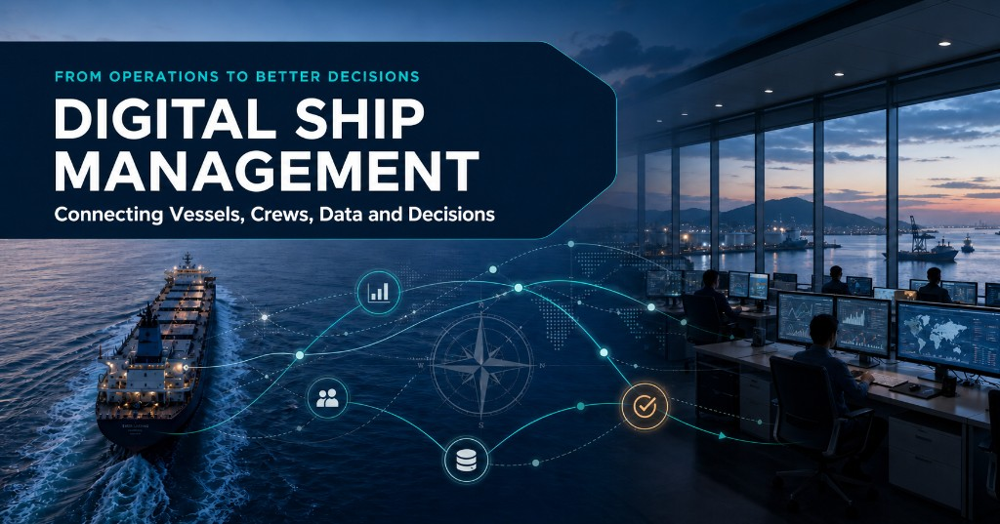
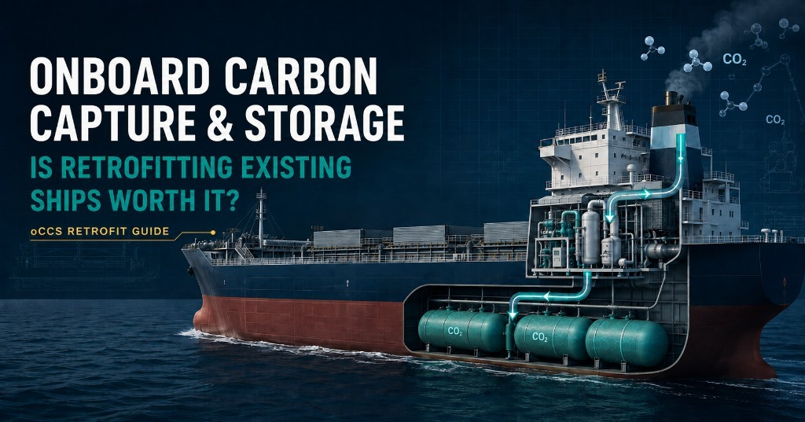
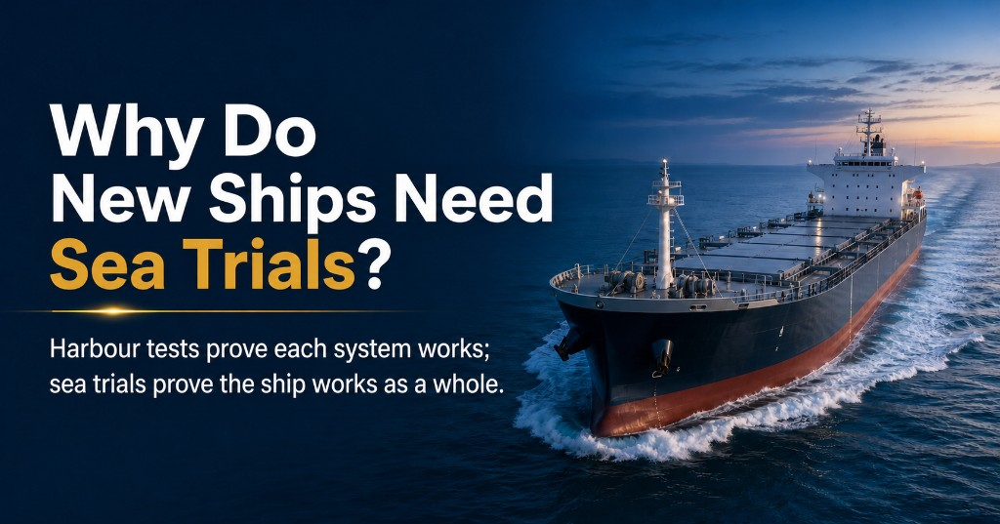
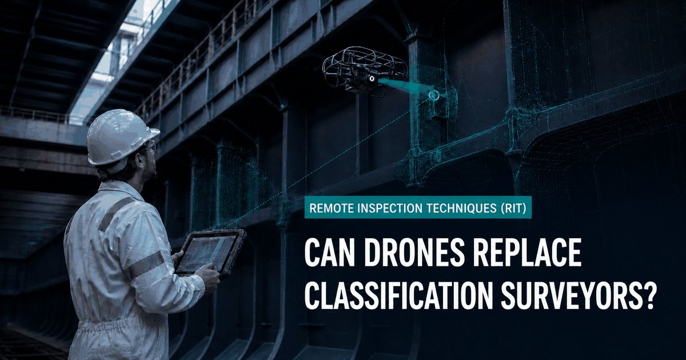
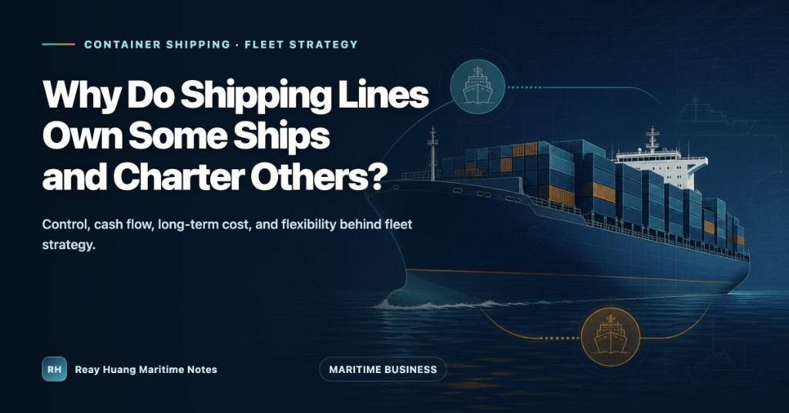
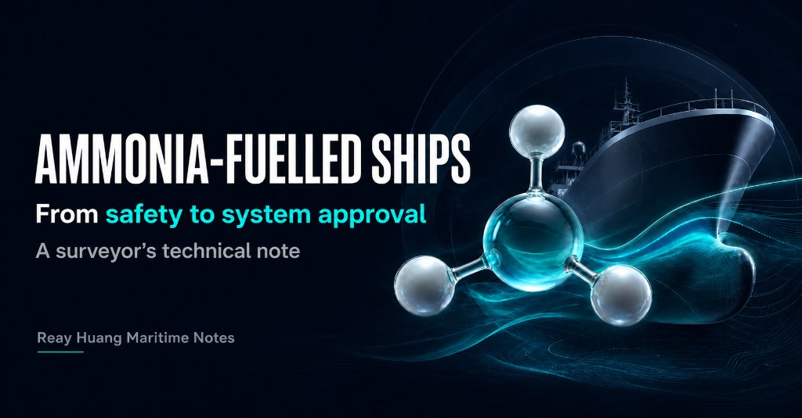
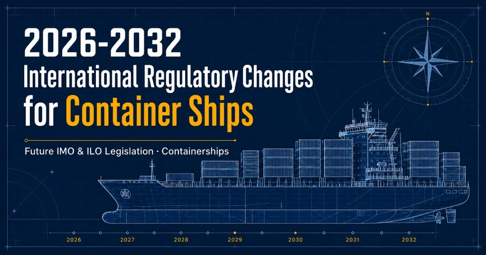

Featured Editor's pick
Hand-picked articles — survey essentials and recent regulatory updates
Digital Ship Management: From Operational Pain Points to a Digital Transformation Roadmap
A practical study covering shipowner pain points, Marine ERP and PMS market solutions, OneOcean, and an actionable transformation roadmap.

LR Advisory | Visual Guide to Maritime Advisory Services
A visual guide to LR Advisory, covering its positioning, four industry challenges, service areas, target users, and practical use cases.

MARPOL Regulatory Framework Summary
A practical guide to the MARPOL 73/78 convention structure, six annexes, certificates, PSC focus areas, and Annex VI update reminders.

SOLAS Regulatory Framework Summary
A practical guide to the SOLAS convention structure, chapter map, retrofit implications, mandatory codes, and submission checklist.

Latest content
Maritime notes, management notes, and profile

Onboard Carbon Capture and Storage: Is Retrofitting an Existing Ship Worth It?
A practical guide to oCCS technology, retrofit integration, regulation, commercial conditions, and the survey priorities that determine whether an existing ship is a viable candidate.

Why Do Newbuildings Need Sea Trials?
Harbour trials show that individual equipment works; sea trials show that the ship works as a whole. Explore how propulsion, manoeuvrability, steering gear, electrical power, automation, failure response, and acceptance evidence demonstrate safe and reliable operation.

Can Drones Replace Class Surveyors? A Shipowner’s Guide to Remote Inspection Techniques
A practical guide to how drones, ROVs and crawlers support close-up surveys, where RIT reduces access cost and risk, what happens after a defect is found, and how major classification societies implement the technology.
Digital Ship Management: From Operational Pain Points to a Digital Transformation Roadmap
A practical study covering shipowner pain points, Marine ERP and PMS market solutions, OneOcean, and an actionable transformation roadmap.

Why Do Shipping Companies Own Some Ships and Charter Others?
A first-principles comparison of ownership, time chartering, and bareboat chartering, with public fleet snapshots for Evergreen, Yang Ming, and Wan Hai.

Ammonia-Fuelled Ships: A Surveyor's Notes on Safety, Regulation and Technology Readiness
A surveyor-focused review of Lloyd's Register's Fuel for Thought: Ammonia, covering toxicity, material compatibility, SCC, bunkering risks, the IGF and IGC Codes, FuelEU Maritime, lifecycle emissions, engines, and fuel supply systems.

2026–2032 International Regulatory Changes for Container Ships
A surveyor-focused review of Lloyd's Register's Future IMO and ILO Legislation – Container Ships, Summer 2026, covering SOLAS, MARPOL, MLC, IGF, IMDG, BWM, CII, and container-ship fire-safety developments.
Container-Ship Wind Shields: How Can a Larger Bow Shield Reduce Drag?
An evidence-based review of bow wind shields on large container ships, covering aerodynamic principles, wind-tunnel testing, in-service data, shipyard reports, energy-saving potential, and design constraints.
Joint Guidelines for Electronic Certificates
A practical note on IMO's joint guidelines for electronic certificates, connecting flag authorization, electronic signatures, ISM document control, class / RO issuance practice, and PSC verification risks.
On-board Certificates and
Documents (MSC.1/Circ.1646)
A searchable database of certificates and documents under the IMO 2022 circular, with English titles, Chinese translations, purpose summaries, applicability notes, and regulatory references for delivery, PSC, and document checks.
LR Engine FAT and Shipboard Trials Requirements
A practical note on LR-RU-001 Part 5 Ch 2 Section 11 for reciprocating internal combustion engine FAT and shipboard trials, covering test scope, DF/GF engines, electronic control, and practical survey checkpoints.
LR Class Rules for Low-Flashpoint Fuel Ships
A practical note on LR-RU-012 (July 2025), covering the rule position, chapter architecture, IGF Code integration, LFPF notation, fuel-specific appendices, and design-review focus areas.
Ship Tailshaft Survey Procedure Essentials
A practical classification survey note based on LR Survey Procedures Manual tailshaft items, covering Tailshaft / Screwshaft manufacture, installation, periodical survey, NDE, liners, corrosion protection wrapping, repairs, renewals, and reporting records.
Ship Steering Gear Survey Procedure Essentials
A practical note based on LR Survey Procedures Manual steering gear survey items, covering SOLAS II-1/29, LR Rules Pt 5 Ch 19, emergency steering capability, sea trials, and in-service survey checks.
BWTS Safety Survey Guide
A visual guide to LR Rules Pt.5 Ch.25, covering BWTS installation safety review logic, 10 technology categories, 13 rule sections, and practical surveyor checkpoints.
Maritime Cyber Resilience Requirements
A 15-minute guide to IMO, IACS UR E26 and E27, and LR's July 2025 classification rules, covering the regulatory timeline, survey focus, and field application.
LR Advisory | Visual Guide to Maritime Advisory Services
A visual guide to LR Advisory, covering its positioning, four industry challenges, service areas, target users, and practical use cases.
MARPOL Regulatory Framework Summary
A practical guide to the MARPOL 73/78 convention structure, six annexes, certificates, PSC focus areas, and Annex VI update reminders.
From Experience-Based Purchasing to Data-Driven Fleet Spare Parts Management
A master thesis research note on how PDCA, MRP, and MPDC connect demand forecasting, procurement planning, and continuous improvement for a 6,944 TEU container-vessel fleet.
SOLAS Regulatory Framework Summary
A practical guide to the SOLAS convention structure, chapter map, retrofit implications, mandatory codes, and submission checklist.
Hazardous Area Explosion Protection
Visual notes on Ex markings, protection types, gas groups, temperature classes, zone classification, responsibilities, verification dossiers, and common field risks.
Fuel for Thought LPG report summary
Visual notes on LPG as an alternative marine fuel, covering fuel properties, safety risks, regulatory framework, bunkering operations, and future low-carbon pathways.
New Construction Project Management Six-Step
A six-step visual guide from project initiation to delivery close-out, covering PM and surveyor responsibilities, key documents, risk signals, and practical checklists.
6S Lean Management from a Marine Surveyor's Perspective
A surveyor-focused guide to applying 6S to ship surveys, engine-room rounds, deck operations, and onboard safety management, including an engine-room checklist and hierarchy of controls.
5S overview study notes
Visual notes on the five pillars, roles, benefits, and practical audit methods.
Statistics for Business Study Notes
Correlation analysis, simple linear regression, R-squared, hypothesis testing, and p-values, with an integrated e-commerce advertising budget case.
IMO MSC 111 key notes
Visual briefing on MASS, alternative fuels, IGC/IGF, SDC, NCSR and SSE, with effective dates and a practical follow-up checklist.
Maritime radiocommunications and GMDSS guide
A practical guide to GMDSS, DSC, EPIRB, SART, AIS and related equipment, covering functions, regulatory logic, survey focus, and common deficiencies.
Fuel for Thought LNG report summary
Visual notes on LNG as marine fuel, covering technology maturity, methane slip, regulations, supply, and decarbonisation pathways.
Fuel for Thought Methanol report summary
Visual notes on methanol as marine fuel, covering safety, regulations, supply, cost, and technology readiness.
MEPC 83 / MEPC 84 visual notes
Key environmental regulations including GFI, CII, and the Net-Zero Framework.
SBC demand classification
Classify spare parts demand with ADI and CV² for forecasting, procurement, and inventory strategy.
Experience · Education · LinkedIn
LR and Evergreen background; two Master's degrees from NYCU and NCKU, with research in hull structural strength analysis and supply chain logistics, grounded in sea service, headquarters shore-side roles, and regulatory ship survey experience.